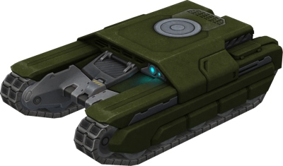
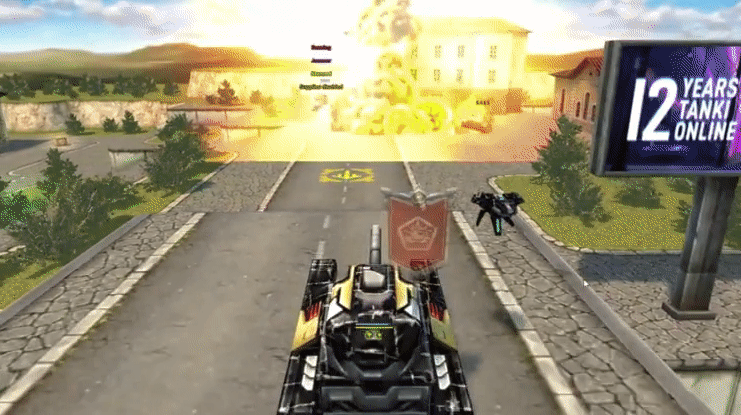
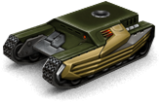
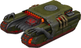

概括
经典的轻型坦克，黄蜂轻甲从游戏开始就一直存在。
它薄弱的装甲完全被它的速度所弥补，再加上紧凑的尺寸，
导致许多玩家在黄蜂和典型的遥控车之间画出相似之处。
这种速度虽然无可争议，但在您绝望地逃跑时可能是一把双刃剑：
一次错误的击键或驱动不良的坡道可能会使坦克侧身。
另一方面，黄蜂轻甲是三个没有中央炮塔的底盘之一，这使得从建筑物后面窥视的风险要小得多，
但如果你使用带后坐力的武器，底盘就会更加不稳定。
简而言之，如果您只想在不附加任何条件的情况下快速前进，那么黄蜂轻甲就是您的最佳选择。
车库中的描述
轻型底盘。拥有最快和最高速度。过速装置植入计时炸弹。
一个小型轻型底盘，“黄蜂轻甲”看起来只对初学者不屑一顾。
小尺寸和高速在战场上提供真正的自由，但它的速度和机动性是一个令人愉快的额外好处。
从底盘结构中移除了所有不必要的部件，包括装甲，以便安装威力惊人的 N2 炸弹。
这种打开任何防御的工具实际上是一个微小的热核弹，可以在不损失速度的情况下投下它，
并使油轮能够迅速放弃未来的热点。
从附近的掩体上总是能更好地观察到非凡的烟花。
装备改造

过速装置
N2炸弹

皮肤

黄蜂轻甲标准

黄蜂轻甲 XT

黄蜂轻甲恶魔